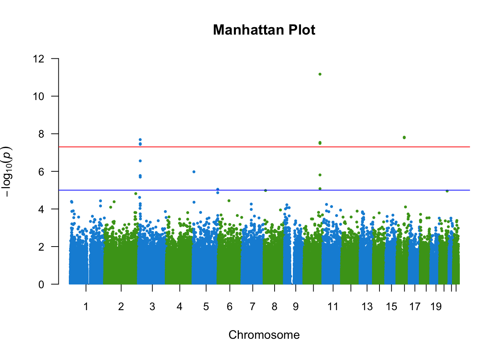
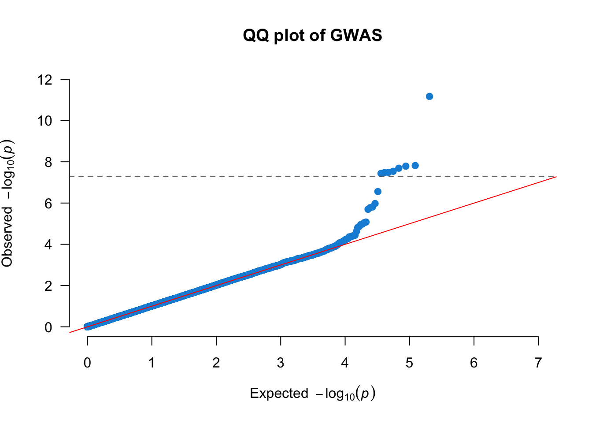
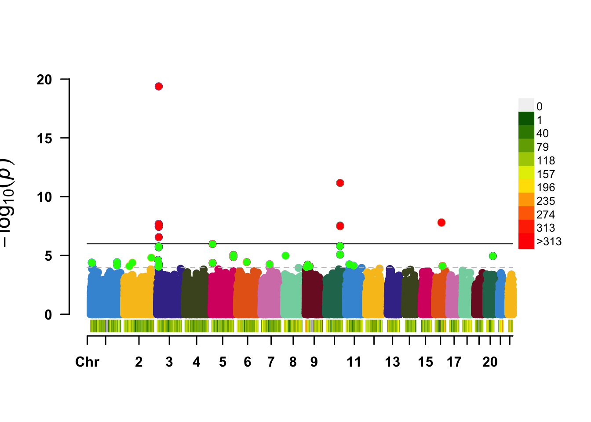
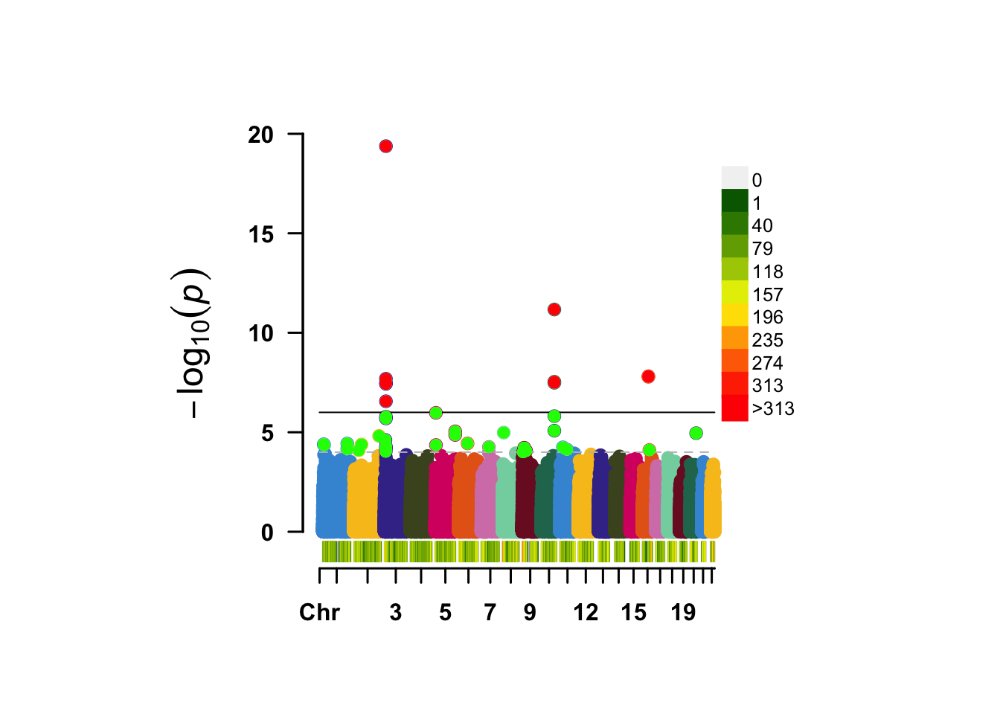
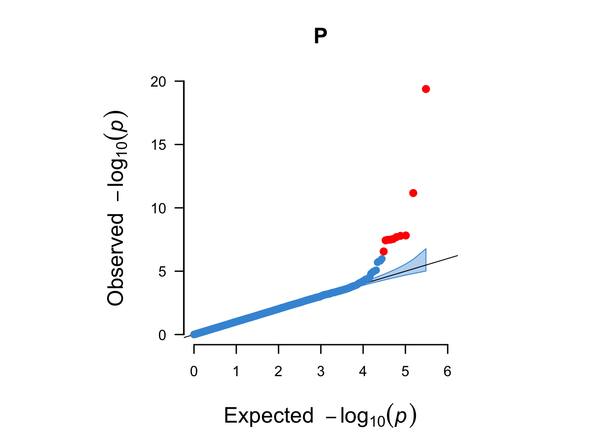
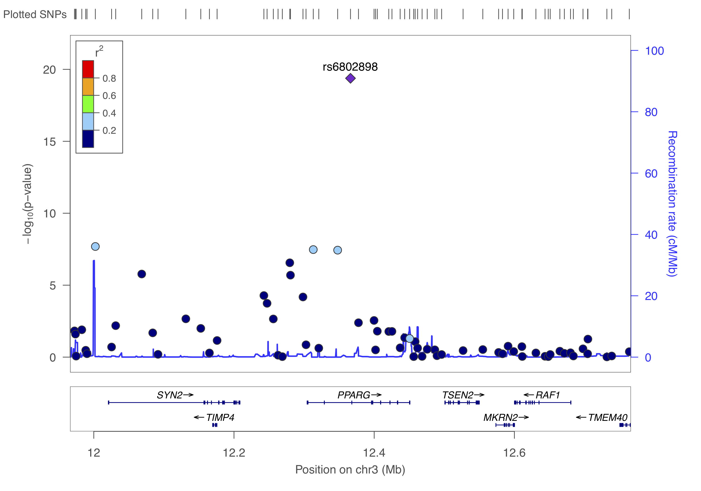

Chapter 6 Genome-wide association study
Now that you have learned how to perform QC, you can easily run a GWAS and execute some downstream visualisation and analyses. Let’s do this with a dummy dataset.
6.1 Exploring the data
Even though someone says that the QC was done, it is still wise and good practice to run some of the commands above to get a ‘feeling’ about the data. So let’s do this.
plink --bfile gwas/gwa --freq --out gwas/gwa
plink --bfile gwas/gwa --missing --out gwas/gwa
plink --bfile gwas/gwa --hardy --out gwas/gwaLet’s visualise the results.
gwas_HWE <- data.table::fread(paste0(COURSE_loc, "/gwas/gwa.hwe"))
gwas_FRQ <- data.table::fread(paste0(COURSE_loc, "/gwas/gwa.frq"))
gwas_IMISS <- data.table::fread(paste0(COURSE_loc, "/gwas/gwa.imiss"))
gwas_LMISS <- data.table::fread(paste0(COURSE_loc, "/gwas/gwa.lmiss"))
gwas_HWE$logP <- -log10(gwas_HWE$P)
ggpubr::gghistogram(gwas_HWE, x = "logP",
add = "mean",
add.params = list(color = "#595A5C", linetype = "dashed", size = 1),
rug = TRUE,
# color = "#1290D9", fill = "#1290D9",
color = "TEST", fill = "TEST",
palette = "lancet",
facet.by = "TEST",
bins = 50,
xlab = "HWE -log10(P)") +
geom_vline(xintercept = 5, linetype = "dashed",
color = "#E55738", size = 1)
ggpubr::gghistogram(gwas_FRQ, x = "MAF",
add = "mean", add.params = list(color = "#595A5C", linetype = "dashed", size = 1),
rug = TRUE,
color = "#1290D9", fill = "#1290D9",
xlab = "minor allele frequency") +
geom_vline(xintercept = 0.05, linetype = "dashed",
color = "#E55738", size = 1)## Warning: Using `bins = 30` by default. Pick better value with the argument
## `bins`.## Warning: geom_vline(): Ignoring `mapping` because `xintercept` was provided.## Warning: geom_vline(): Ignoring `data` because `xintercept` was provided.
gwas_IMISS$callrate <- 1 - gwas_IMISS$F_MISS
ggpubr::gghistogram(gwas_IMISS, x = "callrate",
add = "mean", add.params = list(color = "#595A5C", linetype = "dashed", size = 1),
rug = TRUE, bins = 50,
color = "#1290D9", fill = "#1290D9",
xlab = "per sample call rate") +
geom_vline(xintercept = 0.95, linetype = "dashed",
color = "#E55738", size = 1)## Warning: geom_vline(): Ignoring `mapping` because `xintercept` was provided.
## geom_vline(): Ignoring `data` because `xintercept` was provided.
gwas_LMISS$callrate <- 1 - gwas_LMISS$F_MISS
ggpubr::gghistogram(gwas_LMISS, x = "callrate",
add = "mean", add.params = list(color = "#595A5C", linetype = "dashed", size = 1),
rug = TRUE, bins = 50,
color = "#1290D9", fill = "#1290D9",
xlab = "per SNP call rate") +
geom_vline(xintercept = 0.95, linetype = "dashed",
color = "#E55738", size = 1)## Warning: geom_vline(): Ignoring `mapping` because `xintercept` was provided.
## geom_vline(): Ignoring `data` because `xintercept` was provided.
6.2 Genetic models
A simple chi-square test of association can be done.
plink --bfile gwas/gwa --model --out gwas/dataGenotypic, dominant and recessive tests will not be conducted if any one of the cells in the table of case-control by genotype counts contains less than five observations. This is because the chi-square approximation may not be eliable when cell counts are small. For SNPs with MAFs < 5%, a sample of more than 2,000 cases and controls would be required to meet this threshold and more than 50,000 would be required for SNPs with MAF < 1%.
You can change this default behaviour by adding the flag --cell, e.g., we could lower the threshold to 3.
plink --bfile gwas/gwa --model --cell 3 --out gwas/dataLet’s review the contents of the results.
gwas_model <- data.table::fread(paste0(COURSE_loc, "/gwas/data.model"))
dim(gwas_model)## [1] 1530510 10N_SNPS = length(gwas_model$SNP)
gwas_model[1:10, 1:10]## CHR SNP A1 A2 TEST AFF UNAFF CHISQ DF P
## 1: 1 rs3934834 T C GENO 23/348/1582 23/321/1521 0.26070 2 0.8778
## 2: 1 rs3934834 T C TREND 394/3512 367/3363 0.12770 1 0.7209
## 3: 1 rs3934834 T C ALLELIC 394/3512 367/3363 0.13070 1 0.7177
## 4: 1 rs3934834 T C DOM 371/1582 344/1521 0.19060 1 0.6625
## 5: 1 rs3934834 T C REC 23/1930 23/1842 0.02475 1 0.8750
## 6: 1 rs3737728 A G GENO 206/950/842 222/891/871 2.93100 2 0.2310
## 7: 1 rs3737728 A G TREND 1362/2634 1335/2633 0.17780 1 0.6733
## 8: 1 rs3737728 A G ALLELIC 1362/2634 1335/2633 0.17200 1 0.6783
## 9: 1 rs3737728 A G DOM 1156/842 1113/871 1.25700 1 0.2623
## 10: 1 rs3737728 A G REC 206/1792 222/1762 0.80220 1 0.3704It contains 1530510 rows, one for each SNP, and each type of test (genotypic, trend, allelic, dominant, and recessive) and the following columns:
- chromosome [CHR],
- the SNP identifier [SNP],
- the minor allele [A1] (PLINK always codes the A1-allele as the minor allele!),
- the major allele [A2],
- the test performed [TEST]:
- GENO (genotypic association);
- TREND (Cochran-Armitage trend);
- ALLELIC (allelic as- sociation);
- DOM (dominant model); and
- REC (recessive model)],
- the cell frequency counts for cases [AFF], and
- the cell frequency counts for controls [UNAFF],
- the chi-square test statistic [CHISQ],
- the degrees of freedom for the test [DF],
- and the asymptotic P value [P] of association.
6.3 Logistic regression
We can also perform a test of association using logistic regression. In this case we might want to correct for covariates/confounding factors, for example age, sex, ancestral background, i.e. principal components, and other study specific covariates (e.g. hospital of inclusion, genotyping centre etc.). In that case each of these P values is adjusted for the effect of the covariates.
When running a regression analysis, be it linear or logistic, PLINK assumes a multiplicative model. By default, when at least one male and one female is present, sex (male = 1, female = 0) is automatically added as a covariate on X chromosome SNPs, and nowhere else. The sex flag causes it to be added everywhere, while no-x-sex excludes it.
plink --bfile gwas/gwa --logistic sex --covar gwas/gwa.covar --out gwas/dataLet’s examine the results
gwas_assoc <- data.table::fread(paste0(COURSE_loc, "/gwas/data.assoc.logistic"))
dim(gwas_assoc)## [1] 918306 9gwas_assoc[1:9, 1:9]## CHR SNP BP A1 TEST NMISS OR STAT P
## 1: 1 rs3934834 995669 T ADD 3818 1.0290 0.38120 0.7031
## 2: 1 rs3934834 995669 T AGE 3818 1.0020 1.11800 0.2635
## 3: 1 rs3934834 995669 T SEX 3818 1.0120 0.19090 0.8486
## 4: 1 rs3737728 1011278 A ADD 3982 1.0190 0.38670 0.6990
## 5: 1 rs3737728 1011278 A AGE 3982 1.0020 1.09800 0.2721
## 6: 1 rs3737728 1011278 A SEX 3982 1.0060 0.09898 0.9212
## 7: 1 rs6687776 1020428 T ADD 3915 0.9692 -0.33330 0.7389
## 8: 1 rs6687776 1020428 T AGE 3915 1.0020 1.04000 0.2984
## 9: 1 rs6687776 1020428 T SEX 3915 1.0150 0.23690 0.8127If no model option is specified, the first row for each SNP corresponds to results for a multiplicative test of association. The C >= 0 subsequent rows for each SNP correspond to separate tests of significance for each of the C covariates included in the regression model. We can remove the covariate-specific lines from the main report by adding the hide-covar flag.
The columns in the association results are: - the chromosome [CHR], - the SNP identifier [SNP], - the base-pair location [BP], - the minor allele [A1], - the test performed [TEST]: ADD (multiplicative model or genotypic model testing additivity), - GENO_2DF (genotypic model), - DOMDEV (genotypic model testing deviation from additivity), - DOM (dominant model), or - REC (recessive model)], - the number of missing individuals included [NMISS], - the OR relative to the A1, i.e. minor allele, - the coefficient z-statistic [STAT], and - the asymptotic P-value [P] of association.
We need to calculate the standard error and confidence interval from the z-statistic. We can modify the effect size (OR) to output the beta by adding the beta flag.
6.4 GWAS visualisation
Data visualization is key, not only for presentation but also to inspect the results.
6.4.1 QQ plots
We should create quantile-quantile (QQ) plots to compare the observed association test statistics with their expected values under the null hypothesis of no association and so assess the number, magnitude and quality of true associations.
First, we will add the standard error, call rate, A2, and allele frequencies.
gwas_assoc_sub <- subset(gwas_assoc, TEST == "ADD")
gwas_assoc_sub$TEST <- NULL
temp <- subset(gwas_FRQ, select = c("SNP", "A2", "MAF", "NCHROBS"))
gwas_assoc_subfrq <- merge(gwas_assoc_sub, temp, by = "SNP")
temp <- subset(gwas_LMISS, select = c("SNP", "callrate"))
gwas_assoc_subfrqlmiss <- merge(gwas_assoc_subfrq, temp, by = "SNP")
head(gwas_assoc_subfrqlmiss)## SNP CHR BP A1 NMISS OR STAT P A2 MAF NCHROBS
## 1: rs10000010 4 21227772 C 3996 1.0420 0.9010 0.36760 T 0.4258 7992
## 2: rs10000023 4 95952929 T 3957 0.9902 -0.2160 0.82900 G 0.4841 7914
## 3: rs10000030 4 103593179 A 3991 0.9779 -0.3696 0.71170 G 0.1616 7982
## 4: rs1000007 2 237416793 C 4000 1.0180 0.3649 0.71520 T 0.3122 8000
## 5: rs10000092 4 21504615 C 3963 0.9240 -1.6770 0.09354 T 0.3430 7926
## 6: rs10000121 4 157793485 G 3919 0.9665 -0.7525 0.45170 A 0.4532 7838
## callrate
## 1: 0.99900
## 2: 0.98925
## 3: 0.99775
## 4: 1.00000
## 5: 0.99075
## 6: 0.97975# Remember:
# - that z = beta/se
# - beta = log(OR), because log is the natural log in r
gwas_assoc_subfrqlmiss$BETA = log(gwas_assoc_subfrqlmiss$OR)
gwas_assoc_subfrqlmiss$SE = gwas_assoc_subfrqlmiss$BETA/gwas_assoc_subfrqlmiss$STAT
gwas_assoc_subfrqlmiss_tib <- dplyr::as_tibble(gwas_assoc_subfrqlmiss)
col_order <- c("SNP", "CHR", "BP",
"A1", "A2", "MAF", "callrate", "NMISS", "NCHROBS",
"BETA", "SE", "OR", "STAT", "P")
gwas_assoc_compl <- gwas_assoc_subfrqlmiss_tib[, col_order]
dim(gwas_assoc_compl)## [1] 306102 14head(gwas_assoc_compl)## # A tibble: 6 × 14
## SNP CHR BP A1 A2 MAF callrate NMISS NCHROBS BETA SE
## <chr> <int> <int> <chr> <chr> <dbl> <dbl> <int> <int> <dbl> <dbl>
## 1 rs10000… 4 2.12e7 C T 0.426 0.999 3996 7992 0.0411 0.0457
## 2 rs10000… 4 9.60e7 T G 0.484 0.989 3957 7914 -0.00985 0.0456
## 3 rs10000… 4 1.04e8 A G 0.162 0.998 3991 7982 -0.0223 0.0605
## 4 rs10000… 2 2.37e8 C T 0.312 1 4000 8000 0.0178 0.0489
## 5 rs10000… 4 2.15e7 C T 0.343 0.991 3963 7926 -0.0790 0.0471
## 6 rs10000… 4 1.58e8 G A 0.453 0.980 3919 7838 -0.0341 0.0453
## # … with 3 more variables: OR <dbl>, STAT <dbl>, P <dbl>Let’s list the number of SNPs per chromosome.
# Number of SNPs per chromosome
knitr::kable(table(gwas_assoc_compl$CHR))| Var1 | Freq |
|---|---|
| 1 | 23173 |
| 2 | 25206 |
| 3 | 21402 |
| 4 | 19008 |
| 5 | 19157 |
| 6 | 20672 |
| 7 | 16581 |
| 8 | 18089 |
| 9 | 15709 |
| 10 | 15536 |
| 11 | 14564 |
| 12 | 14889 |
| 13 | 11524 |
| 14 | 9822 |
| 15 | 8838 |
| 16 | 8920 |
| 17 | 8262 |
| 18 | 10356 |
| 19 | 5820 |
| 20 | 7792 |
| 21 | 5412 |
| 22 | 5370 |
gwas_threshold = -log10(5e-8)
qq(gwas_assoc_compl$P, main = "QQ plot of GWAS",
xlim = c(0, 7),
ylim = c(0, 12),
pch = 20, col = uithof_color[16], cex = 1.5, las = 1, bty = "n")
abline(h = gwas_threshold,
col = uithof_color[25], lty = "dashed")
6.4.2 Manhattan plots
We also need to create a Manhattan plot to display the association test P-values as a function of chromosomal location and thus provide a visual summary of association test results that draw immediate attention to any regions of significance.
manhattan(gwas_assoc_compl, main = "Manhattan Plot",
ylim = c(0, 12),
cex = 0.6, cex.axis = 0.9,
col = c("#1290D9", "#49A01D"))
gwas_assoc_complsub <- subset(gwas_assoc_compl, select = c("SNP", "CHR", "BP", "P"))6.4.3 Other plots
It is also informative to plot the density per chromosome. We can use the CMplot for that which you can find here. For now we just make these graphs ‘quick-n-dirty’, you can further prettify them, but you easily loose track of time, so maybe carry on.
CMplot(gwas_assoc_complsub,
plot.type = "d",
bin.size = 1e6, col = c("darkgreen", "yellow", "red"),
file = "jpg", memo = "", dpi = 300, file.output = FALSE, verbose = TRUE)## SNP-Density Plotting.
CMplot(gwas_assoc_complsub,
plot.type = "m", LOG10 = TRUE, ylim = NULL,
threshold = c(1e-6,1e-4), threshold.lty = c(1,2), threshold.lwd = c(1,1), threshold.col = c("black", "grey"),
amplify = TRUE,
bin.size = 1e6, chr.den.col = c("darkgreen", "yellow", "red"),
signal.col = c("red", "green"), signal.cex = c(1,1), signal.pch = c(19,19),
file = "jpg", memo = "", dpi = 300, file.output = FALSE, verbose = TRUE)## Rectangular-Manhattan Plotting P.
CMplot(gwas_assoc_complsub,
plot.type = "b", LOG10 = TRUE, ylim = NULL,
threshold = c(1e-6,1e-4), threshold.lty = c(1,2), threshold.lwd = c(1,1), threshold.col = c("black", "grey"),
amplify = TRUE,
bin.size = 1e6, chr.den.col = c("darkgreen", "yellow", "red"),
signal.col = c("red", "green"), signal.cex = c(1,1), signal.pch = c(19,19),
file = "jpg", memo = "", dpi = 300, file.output = FALSE, verbose = TRUE)## SNP-Density Plotting.

## Circular-Manhattan Plotting P.
## Rectangular-Manhattan Plotting P.
## QQ Plotting P.
6.4.4 Interactive plots
You can also make an interactive version of the Manhattan - just because you can. The code below shows you how.
library(plotly)
library(dplyr)
# Prepare the dataset (as an example we use the data (gwasResults) from the `qqman`-package)
don <- gwasResults %>%
# Compute chromosome size
group_by(CHR) %>%
summarise(chr_len=max(BP)) %>%
# Calculate cumulative position of each chromosome
mutate(tot=cumsum(chr_len)-chr_len) %>%
select(-chr_len) %>%
# Add this info to the initial dataset
left_join(gwasResults, ., by=c("CHR"="CHR")) %>%
# Add a cumulative position of each SNP
arrange(CHR, BP) %>%
mutate( BPcum=BP+tot) %>%
# Add highlight and annotation information
mutate( is_highlight=ifelse(SNP %in% snpsOfInterest, "yes", "no")) %>%
# Filter SNP to make the plot lighter
filter(-log10(P)>0.5)
# Prepare X axis
axisdf <- don %>% group_by(CHR) %>% summarize(center=( max(BPcum) + min(BPcum) ) / 2 )
# Prepare text description for each SNP:
don$text <- paste("SNP: ", don$SNP, "\nPosition: ", don$BP, "\nChromosome: ", don$CHR, "\nLOD score:", -log10(don$P) %>% round(2), "\nWhat else do you wanna know", sep="")
# Make the plot
p <- ggplot(don, aes(x=BPcum, y=-log10(P), text=text)) +
# Show all points
geom_point( aes(color=as.factor(CHR)), alpha=0.8, size=1.3) +
scale_color_manual(values = rep(c("grey", "skyblue"), 22 )) +
# custom X axis:
scale_x_continuous( label = axisdf$CHR, breaks= axisdf$center ) +
scale_y_continuous(expand = c(0, 0), ylim = c(0,9) ) + # remove space between plot area and x axis
# Add highlighted points
geom_point(data=subset(don, is_highlight=="yes"), color="orange", size=2) +
# Custom the theme:
theme_bw() +
theme(
legend.position="none",
panel.border = element_blank(),
panel.grid.major.x = element_blank(),
panel.grid.minor.x = element_blank()
)
ggplotly(p, tooltip="text")It will produce something like this.

Again, this is an example with dummy data - you can try to do it for our GWAS, but careful with the time. You can also choose to carry on.
6.4.5 Regional association plots
We can further visualise regions of interest using a package like LocusZoom. But first we need to find the independent hits by clumping the results. We will just use the defaults, but please take a note of all the options here https://www.cog-genomics.org/plink/1.9/postproc#clump
plink --bfile gwas/gwa --clump gwas/data.assoc.logistic --clump-p1 5e-8 --clump-p2 0.05 --clump-kb 500 --clump-r2 0.05 --clump-verbose --out gwas/data.assoc.logisticNow you will have a list of all the independent SNPs, i.e. the genetic loci, that are associated to the trait.
cat gwas/data.assoc.logistic.clumpedROOTDIR="/Users/swvanderlaan/Desktop/practical" # change this to your root
cat $ROOTDIR/gwas/data.assoc.logistic.clumped##
## CHR F SNP BP P TOTAL NSIG S05 S01 S001 S0001
## 3 1 rs6802898 12366207 4.18e-20 50 35 4 2 1 8
##
## KB RSQ ALLELES F P
## (INDEX) rs6802898 0 1.000 T 1 4.18e-20
##
## rs305500 -400 0.0588 TC/CA 1 0.0476
## rs420014 -394 0.0552 TA/CG 1 0.015
## rs305494 -392 0.0681 TG/CA 1 0.025
## rs438129 -383 0.0721 TT/CC 1 0.0126
## rs7615580 -364 0.309 TC/CT 1 2.05e-08
## rs307560 -298 0.153 TT/CC 1 1.68e-06
## rs11720130 -235 0.0838 TA/CG 1 0.00218
## rs7616006 -124 0.0831 TA/CG 1 5.25e-05
## rs6775191 -119 0.0506 TG/CA 1 0.000182
## rs167466 -110 0.0523 TT/CC 1 0.00222
## rs12635120 -86.6 0.332 TG/CA 1 2.77e-07
## rs6798713 -85.6 0.288 TC/CT 1 2.01e-06
## rs2920500 -67.8 0.102 TA/CG 1 6.59e-05
## rs6768587 -53.1 0.295 TG/CA 1 3.36e-08
## rs2028760 -18.3 0.305 TA/CG 1 3.67e-08
##
## RANGE: chr3:11966007..12366207
## SPAN: 400kb
##
## ------------------------------------------------------------------
##
##
## CHR F SNP BP P TOTAL NSIG S05 S01 S001 S0001
## 10 1 rs7901695 114744078 6.78e-12 32 24 2 1 1 4
##
## KB RSQ ALLELES F P
## (INDEX) rs7901695 0 1.000 C 1 6.78e-12
##
## rs7917983 -21.2 0.0589 CC/TT 1 0.046
## rs7895307 -10.1 0.0819 CG/TA 1 0.00592
## rs7903146 4.26 0.784 CT/TC 1 3.25e-08
## rs7904519 19.8 0.582 CG/TA 1 2.89e-08
## rs11196192 28.2 0.162 CG/TT 1 0.0268
## rs10885409 54 0.502 CC/TT 1 8.35e-06
## rs12255372 54.8 0.624 CT/TG 1 1.55e-06
## rs4918789 67.7 0.24 CG/TT 1 0.000248
##
## RANGE: chr10:114722872..114811797
## SPAN: 88kb
##
## ------------------------------------------------------------------
##
##
## CHR F SNP BP P TOTAL NSIG S05 S01 S001 S0001
## 16 1 rs8050136 52373776 1.52e-08 23 16 1 3 2 1
##
## KB RSQ ALLELES F P
## (INDEX) rs8050136 0 1.000 A 1 1.52e-08
##
## rs7205986 -61.1 0.226 AG/CA 1 0.0434
## rs6499640 -46.6 0.258 AA/CG 1 0.00367
## rs1861868 -25.9 0.15 AT/CC 1 0.0063
## rs1075440 -25.4 0.162 AA/CG 1 0.00802
## rs3751812 2.18 0.994 AT/CG 1 1.63e-08
## rs7190492 12.5 0.258 AG/CA 1 0.0007
## rs8044769 22.9 0.524 AC/CT 1 0.000611
##
## RANGE: chr16:52312647..52396636
## SPAN: 83kb
##
## ------------------------------------------------------------------Clumping identifies three loci and now that you know them, you can visualize them using LocusZoom. First, let’s get what we need (SNP and P) and gzip the results.
echo "SNP P" > gwas/data.assoc.logistic.locuszoom
cat gwas/data.assoc.logistic | awk '$5=="ADD"' | awk '{ print $2, $9 }' >> gwas/data.assoc.logistic.locuszoom
gzip -v gwas/data.assoc.logistic.locuszoomNow you are ready to upload this data.assoc.logistic.locuszoom.gz file to the site: http://locuszoom.org. Try to visualize each locus using the information above and by following the instructions. Choose HapMap 2, hg18, CEU as the LD-reference.
You should get something like below.



You will encounter the above three types of visualizations in any high-quality GWAS paper, because each is so critically informative. Usually, analysts of large-scale meta-analyses of GWAS will also stratify the QQ-plots based on the imputation quality (if your GWAS was imputed), call rate, and allele frequency.